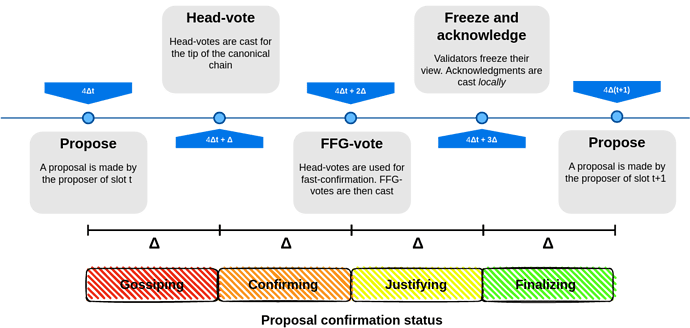
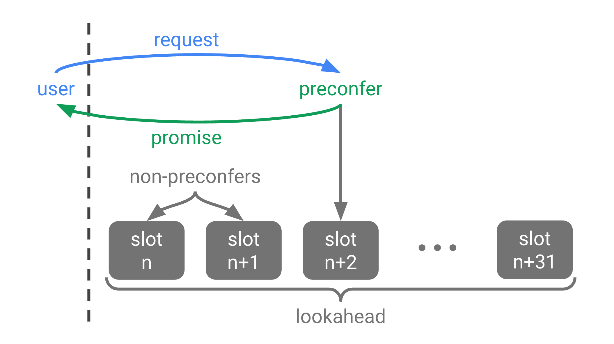
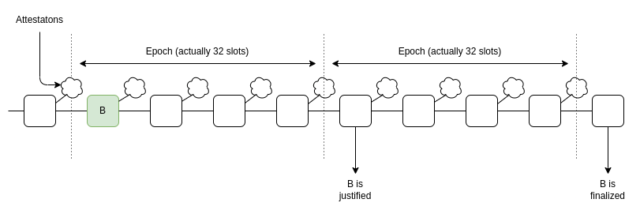
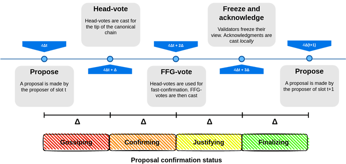
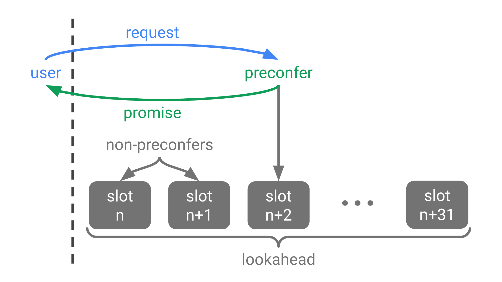

Epochs and slots all the way down: ways to give Ethereum users faster transaction confirmation times
2024 Jun 30
See all posts
Epochs and slots all the way down: ways to give Ethereum users faster transaction confirmation times
One of the important properties of a good blockchain user experience
is fast transaction confirmation times. Today, Ethereum has already
improved a lot compared to five years ago. Thanks to the combination of
EIP-1559 and
steady block times after the Merge,
transactions sent by users on L1 reliably confirm within 5-20 seconds.
This is roughly competitive with the experience of paying with a credit
card. However, there is value in improving user experience further, and
there are some applications that outright require latencies on the order
of hundreds of milliseconds or even less. This post will go over some of
the practical options that Ethereum has.
Overview of existing
ideas and techniques
Today, Ethereum's Gasper
consensus uses a slot and epoch
architecture. Every 12-second slot, a subset of validators publish a
vote on the head of the chain, and over the course of 32 slots (6.4
min), all validators get a chance to vote once. These votes are then
re-interpreted as being messages in a vaguely PBFT-like
consensus algorithm, which after two epochs (12.8 min) gives a very hard
economic assurance called finality.
Over the last couple of years, we've become more and more
uncomfortable with the current approach. The key reasons are that (i)
it's complicated and there are many interaction bugs between the
slot-by-slot voting mechanism and the epoch-by-epoch finality mechanism,
and (ii) 12.8 minutes is way too long and nobody cares to wait that
long.
Single-slot finality replaces this architecture by a mechanism much
more similar to Tendermint
consensus, in which block N is finalized before block N+1 is made.
The main deviation from Tendermint is that we keep the "inactivity
leak" mechanism, which allows the chain to keep going and recover if
more than 1/3 of validators go offline.

A diagram of the leading proposed single-slot
finality design_
The main challenge with SSF is that naively, it seems to imply that
every single Ethereum staker would need to publish two messages every 12
seconds, which would be a lot of load for the chain to handle.
There are clever
ideas for how to mitigate this, including the very recent Orbit
SSF proposal. But even still, while this improves UX significantly
by making "finality" come faster, it doesn't change the fact that users
need to wait 5-20 seconds.
Rollup preconfirmations
For the last few years, Ethereum has been following a rollup-centric
roadmap, designing the Ethereum base layer (the
"L1") around supporting data
availability and other functionalities that can then be used by
layer 2 protocols like rollups
(but also validiums
and plasmas)
that can give users the same level of security as Ethereum, but at much
higher scale.
This creates a separation-of-concerns
within the Ethereum ecosystem: the Ethereum L1 can focus on being
censorship resistant, dependable, stable, and maintaining and improving
a certain base-level core of functionality, and L2s can focus on more
directly reaching out to users - both through different cultural
and technological tradeoffs. But if you go down this path, one
inevitable issue comes up: L2s want to serve users who want
confirmations much faster than 5-20 seconds.
So far, at least in the rhetoric, it has been L2s' responsibility to
create their own "decentralized sequencing" networks. A smaller group of
validators would sign off on blocks, perhaps once every few hundred
milliseconds, and they would put their "stake" behind those blocks.
Eventually, headers of these L2 blocks get published to L1.

L2 validator sets could cheat: they could first sign block B1, and
then later sign a conflicting block B2 and commit it onto the chain
before B1. But if they do this, they would get caught and lose their
deposits. In practice, we have seen centralized versions of this, but
rollups have been slow to develop decentralized sequencing networks.
And you can argue that demanding L2s all do decentralized
sequencing is an unfair deal: we're asking rollups to basically do most
of the same work as creating an entire new L1. For this reason
and others, Justin Drake has been promoting a way to give all L2s (as
well as L1) access to a shared Ethereum-wide preconfirmation mechanism:
based
preconfirmations.
Based preconfirmations
The based preconfirmation approach assumes that Ethereum proposers
will become highly sophisticated actors for MEV-related reasons (see here
for my explanation of MEV, and see also the execution
tickets line of proposals). The based preconfirmation approach takes
advantage of this sophistication by incentivizing these sophisticated
proposers to accept the responsibility of offering
preconfirmations-as-a-service.

The basic idea is to create a standardized protocol by which a user
can offer an additional fee in exchange for an immediate guarantee that
the transaction will be included in the next block, along with possibly
a claim about the results of executing that transaction. If the proposer
violates any promise that they make to any user, they can get
slashed.
As described, based preconfirmations provide guarantees to L1
transactions. If rollups are "based",
then all L2 blocks are L1 transactions, and so the same
mechanism can be used to provide preconfirmations for any L2.
What are we actually
looking at here?
Suppose that we implement single slot finality. We use Orbit-like
techniques to reduce the number of validators signing per slot, but not
too much, so that we can also make progress on the key goal of
reducing the 32 ETH staking minimum. As a result, perhaps the slot time
creeps upward, to 16 sec. We then use either rollup preconfirmations, or
based preconfirmations, to give users faster assurances. What do we have
now? An epoch-and-slot architecture.

The "they're the same picture" meme is getting quite
overused at this point, so I'll just put an old diagram I drew years ago
to describe Gasper's slot-and-epoch architecture and a diagram of L2
preconfirmations beside each other, and hopefully that will get the
point across.
There is a deep philosophical reason why epoch-and-slot
architectures seem to be so hard to avoid: it inherently takes less time
to come to approximate agreement on something, than to come to
maximally-hardened "economic finality" agreement on it.
One simple reason why is number of nodes. While the old linear decentralization
/ finality time / overhead tradeoff is looking milder now due to
hyper-optimized BLS aggregation and in the near future ZK-STARKs, it's
still fundamentally true that:
- "Approximate agreement" only requires a few nodes while economic
finality requires a significant fraction of all nodes.
- Once the number of nodes goes above a certain size, you need to
spend more time to gather signatures.
In Ethereum today, a 12-second slot is divided into three sub-slots,
for (i) block publication and distribution, (ii) attestation, and (iii)
attestation aggregation. If the attester count was much lower, we could
drop to two sub-slots and have an 8-second slot time. Another, and
realistically bigger, factor, is "quality" of nodes. If we could also
rely on a professionalized subset of nodes to do approximate agreements
(and still use the full validators set for finality), we could plausibly
drop that to ~2 seconds.
Hence, it feels to me that (i) slot-and-epoch architectures
are obviously correct, but also (ii) not all slot-and-epoch
architectures are created equal, and there's value in more fully
exploring the design space. In particular, it's worth exploring
options that are not tightly interwoven like Gasper, and where
instead there's stronger separation of concerns between the two
mechanisms.
What should L2s do?
In my view, there are three reasonable strategies for L2s to take at
the moment:
- Be "based", both technologically and spiritually.
That is, they optimize for being pass-through conduits for the Ethereum
base layer's technical properties and its values (high decentralization,
censorship resistance, etc). In their simplest form, you could think of
these rollups as being "branded shards", but they can also be much more
ambitious than that, and experiment quite heavily with new virtual
machine designs and other technical improvements.
- Proudly be a "server with blockchain scaffolding", and make
the best out of it. If you start from a server, and then add
(i) STARK validity proofs to ensure that the server is following the
rules, (ii) guaranteed rights for the user to exit or force
transactions, and possibly (iii) freedom of collective choice, either
through coordinated mass-exit or through the ability to vote to change
the sequencer, then you've already gained a lot of the benefits
of being onchain, while keeping most of the efficiencies of a
server.
- The compromise approach: a hundred-node fast chain, with
Ethereum providing extra interoperability and security. This is
the de-facto current roadmap of many L2 projects.
For some applications, (eg. ENS, keystores),
some payments), a 12-second block time is enough. For those applications
that are not, the only solution is a slot-and-epoch architecture. In all
three cases, the "epochs" are Ethereum's SSF (perhaps we can retcon that
acronym into meaning something other than "single slot", eg. it could be
"Secure Speedy Finality"). But the "slots" are something different in
each of the above three cases:
- An Ethereum-native slot-and-epoch architecture
- Server preconfirmations
- Committee preconfirmations
A key question is, how good can we make something in category (1)? In
particular, if it gets really good, then it feels like category
(3) ceases to have as much meaning. Category (2) will always exist, at
the very least because anything "based" doesn't work for off-chain-data
L2s such as plasmas and validiums. But if an Ethereum-native
slot-and-epoch architecture can get down to 1-second "slot" (ie.
pre-confirmation) times, then the space for category (3) becomes quite a
bit smaller.
Today, we're far from having final answers to these questions. A key
question - just how sophisticated are block proposers going to become -
remains an area where there is quite a bit of uncertainty. Designs like
Orbit
SSF are very recent, suggesting that the design space of
slot-and-epoch designs where something like Orbit SSF is the epoch is
still quite under-explored. The more options we have, the better we can
do for users both on L1 and on L2s, and the more we can simplify the job
of L2 developers.
Epochs and slots all the way down: ways to give Ethereum users faster transaction confirmation times
2024 Jun 30 See all postsOne of the important properties of a good blockchain user experience is fast transaction confirmation times. Today, Ethereum has already improved a lot compared to five years ago. Thanks to the combination of EIP-1559 and steady block times after the Merge, transactions sent by users on L1 reliably confirm within 5-20 seconds. This is roughly competitive with the experience of paying with a credit card. However, there is value in improving user experience further, and there are some applications that outright require latencies on the order of hundreds of milliseconds or even less. This post will go over some of the practical options that Ethereum has.
Overview of existing ideas and techniques
Single slot finality
Today, Ethereum's Gasper consensus uses a slot and epoch architecture. Every 12-second slot, a subset of validators publish a vote on the head of the chain, and over the course of 32 slots (6.4 min), all validators get a chance to vote once. These votes are then re-interpreted as being messages in a vaguely PBFT-like consensus algorithm, which after two epochs (12.8 min) gives a very hard economic assurance called finality.
Over the last couple of years, we've become more and more uncomfortable with the current approach. The key reasons are that (i) it's complicated and there are many interaction bugs between the slot-by-slot voting mechanism and the epoch-by-epoch finality mechanism, and (ii) 12.8 minutes is way too long and nobody cares to wait that long.
Single-slot finality replaces this architecture by a mechanism much more similar to Tendermint consensus, in which block N is finalized before block N+1 is made. The main deviation from Tendermint is that we keep the "inactivity leak" mechanism, which allows the chain to keep going and recover if more than 1/3 of validators go offline.

A diagram of the leading proposed single-slot finality design_
The main challenge with SSF is that naively, it seems to imply that every single Ethereum staker would need to publish two messages every 12 seconds, which would be a lot of load for the chain to handle. There are clever ideas for how to mitigate this, including the very recent Orbit SSF proposal. But even still, while this improves UX significantly by making "finality" come faster, it doesn't change the fact that users need to wait 5-20 seconds.
Rollup preconfirmations
For the last few years, Ethereum has been following a rollup-centric roadmap, designing the Ethereum base layer (the "L1") around supporting data availability and other functionalities that can then be used by layer 2 protocols like rollups (but also validiums and plasmas) that can give users the same level of security as Ethereum, but at much higher scale.
This creates a separation-of-concerns within the Ethereum ecosystem: the Ethereum L1 can focus on being censorship resistant, dependable, stable, and maintaining and improving a certain base-level core of functionality, and L2s can focus on more directly reaching out to users - both through different cultural and technological tradeoffs. But if you go down this path, one inevitable issue comes up: L2s want to serve users who want confirmations much faster than 5-20 seconds.
So far, at least in the rhetoric, it has been L2s' responsibility to create their own "decentralized sequencing" networks. A smaller group of validators would sign off on blocks, perhaps once every few hundred milliseconds, and they would put their "stake" behind those blocks. Eventually, headers of these L2 blocks get published to L1.
L2 validator sets could cheat: they could first sign block B1, and then later sign a conflicting block B2 and commit it onto the chain before B1. But if they do this, they would get caught and lose their deposits. In practice, we have seen centralized versions of this, but rollups have been slow to develop decentralized sequencing networks. And you can argue that demanding L2s all do decentralized sequencing is an unfair deal: we're asking rollups to basically do most of the same work as creating an entire new L1. For this reason and others, Justin Drake has been promoting a way to give all L2s (as well as L1) access to a shared Ethereum-wide preconfirmation mechanism: based preconfirmations.
Based preconfirmations
The based preconfirmation approach assumes that Ethereum proposers will become highly sophisticated actors for MEV-related reasons (see here for my explanation of MEV, and see also the execution tickets line of proposals). The based preconfirmation approach takes advantage of this sophistication by incentivizing these sophisticated proposers to accept the responsibility of offering preconfirmations-as-a-service.

The basic idea is to create a standardized protocol by which a user can offer an additional fee in exchange for an immediate guarantee that the transaction will be included in the next block, along with possibly a claim about the results of executing that transaction. If the proposer violates any promise that they make to any user, they can get slashed.
As described, based preconfirmations provide guarantees to L1 transactions. If rollups are "based", then all L2 blocks are L1 transactions, and so the same mechanism can be used to provide preconfirmations for any L2.
What are we actually looking at here?
Suppose that we implement single slot finality. We use Orbit-like techniques to reduce the number of validators signing per slot, but not too much, so that we can also make progress on the key goal of reducing the 32 ETH staking minimum. As a result, perhaps the slot time creeps upward, to 16 sec. We then use either rollup preconfirmations, or based preconfirmations, to give users faster assurances. What do we have now? An epoch-and-slot architecture.
The "they're the same picture" meme is getting quite overused at this point, so I'll just put an old diagram I drew years ago to describe Gasper's slot-and-epoch architecture and a diagram of L2 preconfirmations beside each other, and hopefully that will get the point across.
There is a deep philosophical reason why epoch-and-slot architectures seem to be so hard to avoid: it inherently takes less time to come to approximate agreement on something, than to come to maximally-hardened "economic finality" agreement on it.
One simple reason why is number of nodes. While the old linear decentralization / finality time / overhead tradeoff is looking milder now due to hyper-optimized BLS aggregation and in the near future ZK-STARKs, it's still fundamentally true that:
In Ethereum today, a 12-second slot is divided into three sub-slots, for (i) block publication and distribution, (ii) attestation, and (iii) attestation aggregation. If the attester count was much lower, we could drop to two sub-slots and have an 8-second slot time. Another, and realistically bigger, factor, is "quality" of nodes. If we could also rely on a professionalized subset of nodes to do approximate agreements (and still use the full validators set for finality), we could plausibly drop that to ~2 seconds.
Hence, it feels to me that (i) slot-and-epoch architectures are obviously correct, but also (ii) not all slot-and-epoch architectures are created equal, and there's value in more fully exploring the design space. In particular, it's worth exploring options that are not tightly interwoven like Gasper, and where instead there's stronger separation of concerns between the two mechanisms.
What should L2s do?
In my view, there are three reasonable strategies for L2s to take at the moment:
For some applications, (eg. ENS, keystores), some payments), a 12-second block time is enough. For those applications that are not, the only solution is a slot-and-epoch architecture. In all three cases, the "epochs" are Ethereum's SSF (perhaps we can retcon that acronym into meaning something other than "single slot", eg. it could be "Secure Speedy Finality"). But the "slots" are something different in each of the above three cases:
A key question is, how good can we make something in category (1)? In particular, if it gets really good, then it feels like category (3) ceases to have as much meaning. Category (2) will always exist, at the very least because anything "based" doesn't work for off-chain-data L2s such as plasmas and validiums. But if an Ethereum-native slot-and-epoch architecture can get down to 1-second "slot" (ie. pre-confirmation) times, then the space for category (3) becomes quite a bit smaller.
Today, we're far from having final answers to these questions. A key question - just how sophisticated are block proposers going to become - remains an area where there is quite a bit of uncertainty. Designs like Orbit SSF are very recent, suggesting that the design space of slot-and-epoch designs where something like Orbit SSF is the epoch is still quite under-explored. The more options we have, the better we can do for users both on L1 and on L2s, and the more we can simplify the job of L2 developers.